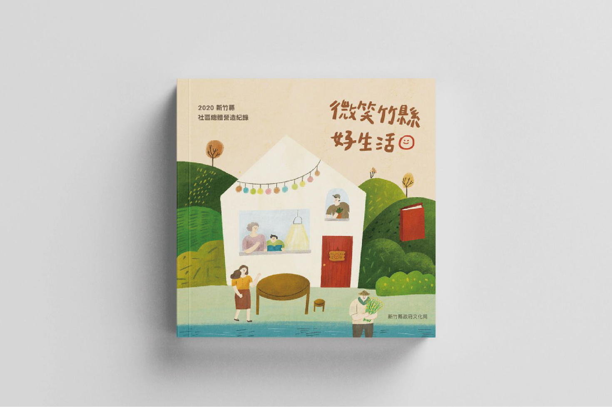

PROJECTS
新竹縣社區總體營造紀錄 | 社區深度紀實攝影

參與 2020 新竹縣社區總體營造紀錄的編輯團隊，探訪新竹縣各個社區進行拍攝，不僅了解每個社區的文化歷史與特色，也走訪偏鄉部落，深入了解不同社區所擁有的人文風情；並與公司團隊一同編輯出版。

參與 2020 新竹縣社區總體營造紀錄的編輯團隊，探訪新竹縣各個社區進行拍攝，不僅了解每個社區的文化歷史與特色，也走訪偏鄉部落，深入了解不同社區所擁有的人文風情；並與公司團隊一同編輯出版。